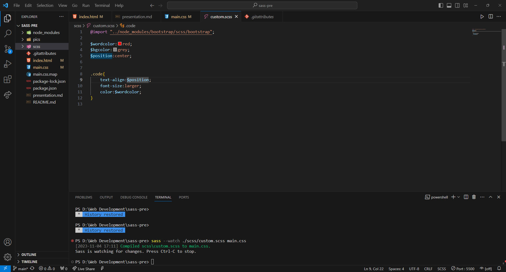

Sass = Syntactically Awesome Stylesheets


L'installation et l'utilisation des documents sass sont tous faites dans la commande.
Pour l'installation,
En utilisant npm:
npm install -g sassPour Mac OS/Linux (Homebrew):
brew install sass/sass/sassIl existe aussi des applications dans lesquelles Sass est intégré.
Pour l'utilisation,
En général, le Sass est utilisé pour manager des stylesheets très grandes, par exemple, celui-ci de Bootstrap. Donc la première étape, c'est d'importer le document css initial.
@import "../node_modules/bootstrap/scss/bootstrap";Ensuite, on peut ajouter nos propres codes sass.
Enfin, pour compiler sass à css,
sass input.scss output.cssOn peut aussi ajouter -watch après sass qui permet de re-compiler le CSS lorsqu'on sauvegarde le Sass

...
...